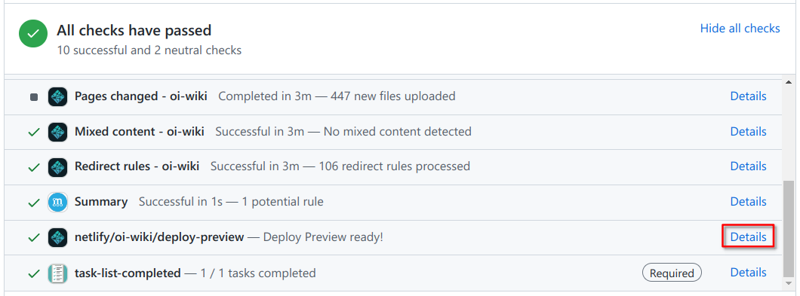

如何参与
在文章开始之前，OI Wiki 项目组全体成员十分欢迎您为本项目贡献页面。正因为有了上百位像您一样的人，才有了 OI Wiki 的今天！
这篇文章将主要叙述参与 OI Wiki 编写的写作过程。请您在撰稿或者修正 Wiki 页面以前，仔细阅读以下内容，以帮助您完成更高质量的内容。
贡献指南
请您在编辑前查看 OI Wiki 贡献指南 和 项目方针，以更好地和社区贡献者进行合作、交流。
参与协作
Tip
在 Issues 中也有很多待修复/解决的问题，尤其是我们的迭代计划（Iteration Plan）。从这里获取任务是一个很好的开始！
为了保证条目内容的专业性和准确性，我们建议您在编辑前先考虑以下几点：
- 选择您熟悉的领域：请优先编辑那些与您的专业知识、学习背景或兴趣爱好相关的条目。这有助于您创作出高质量的内容。
- 谨慎对待新领域：如果您对某个主题还处于初学阶段或不太了解，建议您先通过阅读、学习加深理解，待有一定把握后再动手编辑。
- 查阅相关资料：为条目添加内容或进行修订时，建议您先查阅权威文献和资料，确保信息准确无误。也欢迎您在页面评论区或我们的社区提出问题，与其他编者交流讨论。
我们珍惜每位贡献者的热情和付出，也理解大家的专业水平不尽相同。让我们携手合作，共同呵护这个知识的乐园，用准确、专业的内容去帮助更多读者。期待您的贡献！在这里引用维基百科的一句话：
不要害怕编辑，勇于更新页面！1
在 GitHub 上编辑
参与 OI Wiki 的编写 需要 一个 GitHub 账号（可以前往 GitHub 的账号注册页面 页面注册），但 不需要 高超的 GitHub 技巧，即使你是一名新手，只要按照下面所述的步骤操作，也能够 非常出色 地完成编辑。
Tip
在你的更改被合并到 OI Wiki 的主仓库之前，你对 OI Wiki 的内容所作出的修改均不会出现在 OI Wiki 的主站上，所以无需担心你的修改会破坏 OI Wiki 上正在显示的内容。
如果还是不放心，可以查看 GitHub 的官方教程。
编辑单个页面内的内容
- 在 OI Wiki 上找到对应页面；
- 点击正文右上方（目录左侧）的 「编辑此页」（edit）按钮，在确认您已经阅读了本页面和 格式手册 后点击按钮根据提示跳转到 GitHub 进行编辑；
- 在编辑框内编写你想修改的内容。请注意，在修改和接下来的提交过程中，请 关闭您的自动翻译软件，因为它可能产生不必要的麻烦（例如您修改的文件有时会被其错误改名，从而影响目录结构）；
- 编写完成后滚动到页面下方，按照本文中 commit 信息格式规范 填写 commit 信息，之后点击 Propose changes 按钮提交修改。点击按钮后，GitHub 会自动帮你创建一份 OI Wiki 仓库的分支，并将你的提交添加到这个分支仓库。
- GitHub 会自动跳转到你的分支仓库的页面，此时页面上方会显示一个绿色的 Create pull request 按钮，点击后 GitHub 会跳转到一个创建 Pull Request 页面。向下滚动检查自己所作出的修改没有错误后，按照本文中 Pull Request 信息格式规范 一节中的规范书写 Pull Request 信息，然后点击页面上的绿色的 Create pull request 按钮创建 Pull Request。
- 不出意外的话，你的 Pull Request 就顺利提交到仓库，等待管理员审核并合并到主仓库中即可。
在等待合并的时间里，你可以给他人的 Pull Request 提意见、点赞或者点踩。如果有新消息，会在网页右上角出现提示，并附有邮件提醒（取决于个人设置中配置的通知方式）。
编辑多个页面内的内容
如果你需要同时编辑互相无关联的多个页面的内容，请按照上方的 编辑单个页面内的内容 一节一次修改所有页面。
- 打开 OI-Wiki/OI-Wiki 仓库，点击键盘上的.按钮（或者将 URL 中的
github.com更改为github.dev）2，进入 GitHub 的网页版 VS Code 编辑器； - 在编辑器中作出对页面源文件的更改，可以使用页面右上方的预览按钮（或按下Ctrl+KV快捷键）在右侧打开预览界面；
- 修改完成后使用左侧的 Source Control 选项卡，并按照本文中 commit 信息格式规范 填写 commit 信息并提交，提交时会提示是否创建此仓库的分支，点击绿色的 Fork Repository 按钮即可。
- 提交后会在网页上方的中央弹出一个提示框，在第一次的提示框内填写标题，第二次的提示框内填写此提交要提交到的仓库内分支名称，之后右下角会弹出一个提示框，内容类似于
Created Pull Request #1 for OI-Wiki/OI-Wiki.，点击蓝字链接即可查看该 Pull Request。
向 Pull Request 追加更改
- 打开 OI-Wiki 的 Pull Request 列表，找到您提交的 Pull Request 并点击。
- Pull Request 页面的标题下方将会有一段例如
<您的ID> wants to merge x commits into OI-wiki:master from <您的ID>:patch-1的文字，点击<您的ID>:patch-1部分。 - 您应该会被重定向到您的分支仓库中，而且文件列表左上角的分支名称是你提交 Pull Request 的分支名称（在本示例中应为
patch-1）。 - 进行您需要的更改。
- 如果您需要编辑单个文件或多个互相无关联的页面的内容，请直接找到你要的文件并进行更改，更改完成后滚动到页面下方，按照本文中 commit 信息格式规范 填写 commit 信息，之后点击 Commit changes 按钮提交修改。
- 如果您需要编辑多个文件，点击键盘上的.按钮（或者将 URL 中的
github.com更改为github.dev）2，进入 GitHub 的网页版 VS Code 编辑器并作出更改。然后使用左侧的 Source Control 选项卡，并按照本文中 commit 信息格式规范 填写 commit 信息并提交修改。
- 这时你的更改会被自动追加在您的 Pull Request 中。
使用 Git 在本地进行编辑
Warning
对于一般用户，我们更推荐使用上方所述的 GitHub 的 Web 编辑器进行编辑。
虽然大多数情况下您可以直接在 GitHub 上进行编辑，但对于一些较为特殊的情况（如需要使用 GPG 签名），我们更推荐使用 Git 在本地进行编辑。
大致流程如下：
- 将主仓库 Fork 到自己的仓库中；
- 将 Fork 后的分支仓库克隆（clone）到本地；
- 在本地进行修改后提交（commit）这些更改；
- 将这些更改推送（push）到你克隆的分支仓库；
- 提交 Pull Request 至主仓库。
详细的操作方式可以参考 Git 页面。
向 Pull Request 追加更改
在 clone 下来的本地分支仓库中继续进行修改，并提交（commit）以及推送（push）这些更改即可。你的更改会被自动追加在 Pull Request 中。
在构建的网页中预览变更
在 Pull Request 页面下方可以找到测试页面，点击 netlify/oi-wiki/deploy-preview 一项的 Details 链接（如下图），可以进入自动构建的，由您变更后的页面供您预览。

对于目录和引用的变更
通常情况下，如果您需要添加一个新页面，或者修改已有页面在目录中的链接，您就需要对 mkdocs.yml 文件作出改动。
添加新页面可以参考既有的格式。但除非是进行重构或修正名词，否则 我们不建议对既有页面的引用链接进行修改，Pull Requests 中不必要的修改也将被驳回。
如果您坚持要修改链接，请注意更新 author 字段和重定向文件。
author 字段
GitHub API 在文件目录变更后不能跟踪统计，所以我们在文件头手动维护了一个作者列表来解决这个问题。author 字段位于整个 Markdown 文件的开头，形如 author: Ir1d, cjsoft，相邻两个 ID 之间用逗号加空格隔开。这里的 ID 是 GitHub 的用户名，即 GitHub profile 的地址（例如 https://github.com/Ir1d 中的 Ir1d）。
修改链接时，需要将当前页面中的 contributors 逐一填入 author 字段。
重定向文件
在修改链接时，为了避免在站外引用时出现死链，需要修改重定向文件。
_redirects 文件用于生成 netlify 的配置 和 用于跳转的文件。
每一行表示一个重定向规则，分别写跳转的起点和终点的 url（不包含域名）：
1 | |
注：所有跳转均为 301 跳转，只有在修改目录中 url 造成死链的时候需要修改。
Commit 信息格式规范
对于提交时需要填写的 commit 信息，请遵守以下几点基本要求：
- commit 摘要请简要描述这一次 commit 改动的内容。注意 commit 摘要的长度不要超过 50 字符，超出的部分会自动置于正文中。
- 如果需要进一步描述本次 commit 内容，请在正文中详细说明。
对于 commit 摘要，推荐按照如下格式书写：
1 | |
修改类型分为如下几类：
feat：用于添加内容的情况。fix：用于修正现有内容错误的情况。refactor：用于对一个页面进行重构（较大规模的更改）的情况。revert：用于回退之前更改的情况。
Pull Request 信息格式规范
对于 Pull Request，请遵守以下几点要求：
- 标题请写明本次 PR 的目的（做了 什么 工作，修复了 什么 问题）。
- 内容请简要叙述修改的内容。如果修复了一个 issue 的问题，请在内容中添加
fix #xxxx字段，其中xxxx代表 issue 的编号。 - 请您仔细阅读 贡献指南 和 社区公约，并在同意后勾选 PR 模板中的框，表示您同意了以上指南和公约。
对于 Pull Request 的标题，推荐使用如下格式书写：
1 | |
修改类型分为如下几类：
feat：用于添加内容的情况。fix：用于修正现有内容错误的情况。refactor：用于对一个页面进行重构（较大规模的更改）的情况。revert：用于回退之前更改的情况。
示例：
fix(ds/persistent-seg): 修改代码注释使描述更清晰fix: tools/judger/index 不在目录中 (#3709)feat(math/poly/fft): better proofrefactor(ds/stack): 整理页面内容
协作流程
- 在收到一个新的 Pull Request 之后，GitHub 会给 reviewer 发送邮件；
- 与此同时，在 GitHub Actions 和 Netlify 上会运行两组测试，它们会把进度同步在 PR 页面的下方。GitHub Actions 主要用来确认 PR 中内容的修改不会影响到网站构建的进程；Netlify 用来把 PR 中的更新构建出来，方便 reviewer 审核（在测试完成后点击 Details 可以了解更多）；
- reviewer 可能会发现问题，并提出
review或suggested changes（建议更改，显示为灰色图标）/requested changes（强制更改，显示为红色图标，只会在 reviewer 拥有 repo 写权限时出现）。一般来说，reviewer 也会附上建议和需要进行的更改，在这时，您将会需要继续向 Pull Request 追加其他更改。更改的方法可以参考在 GitHub 上编辑或者使用 Git 在本地进行编辑部分的向 Pull Request 追加更改部分。 - 在足够多 reviewer 投票通过一个 PR 之后，这个 PR 才可以合并到 master 分支中；
- 在合并到 master 分支之后，GitHub Actions 会重新构建一遍网站内容，并更新到 gh-pages 分支；
- 这时服务器才会拉取 gh-pages 分支的更新，并重新部署最新版本的内容。